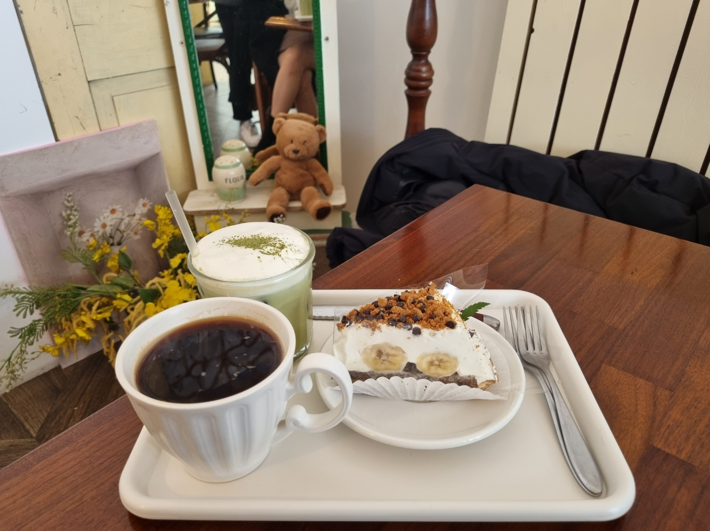
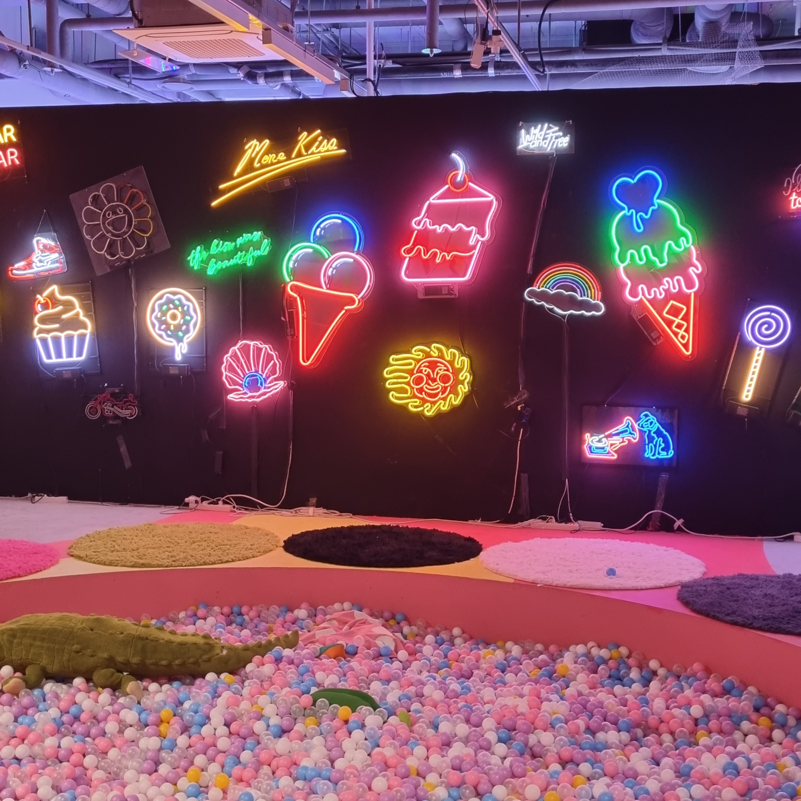
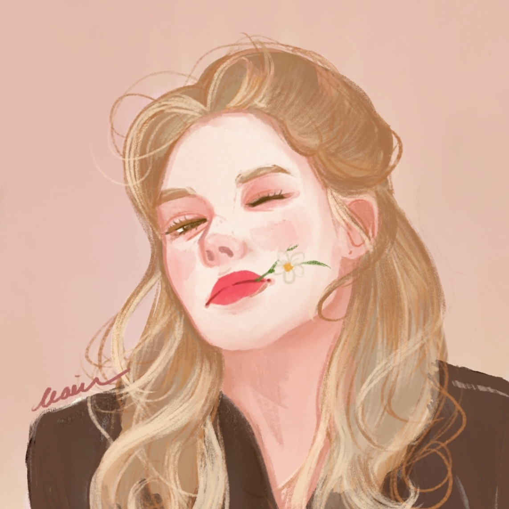

Likes & Hobby
저는 시각적인 것에 관심이 많습니다. 그래서 그림 그리기, 예쁜 풍경 사진 찍기 등을 취미로 가지고 있습니다. 요즘엔 코딩을 배우느라 자주 즐기진 못하지만, 가끔 친구와 기분전환 할 겸 예쁜 카페에 가거나 전시회를 가기도 합니다. 일정이 없는 날에는 집에서 좋아하는 영화나 드라마를 보며 쉽니다.



저는 시각적인 것에 관심이 많습니다. 그래서 그림 그리기, 예쁜 풍경 사진 찍기 등을 취미로 가지고 있습니다. 요즘엔 코딩을 배우느라 자주 즐기진 못하지만, 가끔 친구와 기분전환 할 겸 예쁜 카페에 가거나 전시회를 가기도 합니다. 일정이 없는 날에는 집에서 좋아하는 영화나 드라마를 보며 쉽니다.